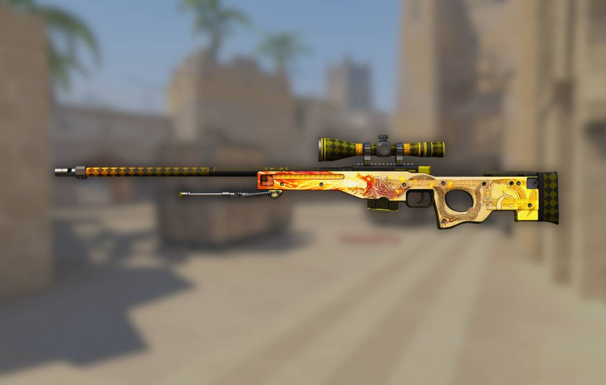

Popular Rifle Skins
Rifle skins make up the core of the CS:GO skin economy, with the AK-47 and M4A4/M4A1-S leading in popularity due to their frequent use in competitive play. These weapons balance price, liquidity, and investment potential.

AK-47 Skins

The AK-47 is the most popular rifle in CS:GO, used by Terrorists in virtually every competitive match. Its skins typically maintain strong value due to consistent demand.
Notable AK-47 Skins:
- Fire Serpent
- Released in Operation Bravo Case
- Limited availability drives high prices
- Distinctive dragon artwork
- Wild Lotus
- Part of The St. Marc Collection
- Rarely obtainable through trade-up contracts
- Vibrant floral design
- Asiimov
- Iconic white, orange and black sci-fi design
- Consistently popular in the market
- Part of the larger Asiimov collection
M4A4 & M4A1-S Skins

The Counter-Terrorist equivalents to the AK-47, these rifles feature some of the most coveted skins in the game. Players can choose between the M4A4 or M4A1-S, affecting which skins they can use.
Notable M4 Skins:
- M4A4 Howl
- Contraband rarity due to copyright issues
- Only contraband skin in the game
- Consistently appreciating in value
- M4A1-S Knight
- Used in trade-up contracts for AWP Dragon Lore
- Clean, elegant gold design
- Value tied to Dragon Lore demand
- M4A4 Poseidon
- Rare drop from The Gods and Monsters Collection
- Greek mythology-inspired design
- Limited supply due to collection discontinuation
AWP Skins
The AWP is CS:GO's iconic sniper rifle, capable of one-shot kills. Its high-profile nature in gameplay makes its skins among the most visible and desirable in the game.
Notable AWP Skins:
- Dragon Lore
- The most prestigious skin in CS:GO
- Extremely rare drop from The Cobblestone Collection
- Golden dragon design with intricate details
- Gungnir
- Norse mythology-inspired design
- Part of The Norse Collection
- Blue and silver color scheme with runic details
- Asiimov
- One of the most recognizable skins in CS:GO
- Featured in many professional tournaments
- Clean white, orange and black futuristic design
Investment Strategy
When investing in rifle skins, consider these factors:
- Weapon Usage Rate
- AK-47, M4A4/M4A1-S, and AWP see the most gameplay
- Meta changes can affect specific model popularity
- Tournament visibility increases demand
- Collection Status
- Discontinued collections typically appreciate faster
- Operation-exclusive drops become more scarce over time
- Limited release windows affect long-term supply
- Visual Appeal
- Distinctive, high-contrast designs retain popularity
- Professional player preferences influence market trends
- Unique patterns (like AK Case Hardened blue gems) command premiums